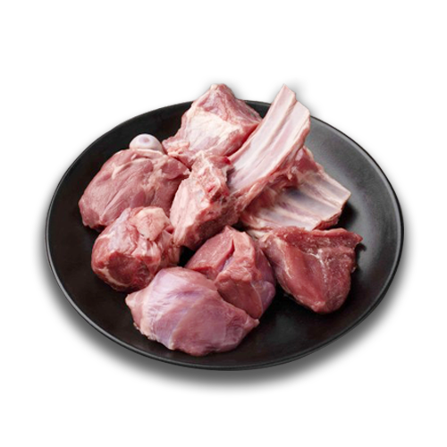
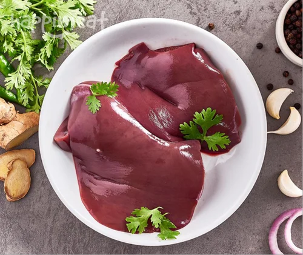

Mutton, the meat from adult sheep, provides a more gamey alternative to standard beef or
pork. You can use mutton as you would use pork or beef, and some options are mutton stew and
roast mutton. The meat is rich in a variety of minerals and vitamins, but it contains more
fat than very lean cuts of beef. In moderation, mutton can be a beneficial component in an
overall healthy diet.
It contains more fat than very lean cuts of beef. In moderation, mutton can be a beneficial
component in an overall healthy diet.

MINERALS IN MUTTON
Each serving of mutton provides 4 milligrams of iron, or 22 percent of the daily value. Iron is necessary for healthy
red blood cells and preventing anemia, and the iron from meat is in the form of heme iron, which is easy for your body
to absorb. Zinc is a mineral that promotes a strong immune system,
and a 3-ounce serving of mutton supplies 5 milligrams of zinc, or 33 percent of the daily value. A 3-ounce portion of
mutton provides 348 milligrams of potassium and 115 milligrams of sodium. Potassium helps counter the effects of sodium,
and a high-potassium, low-sodium diet helps lower your blood pressure.

VITAMINS IN MUTTON
A three-ounce portion of cooked mutton supplies 3.8 micrograms of vitamin B-12, or 32 percent
of the daily value. Vitamin B-12 is an essential nutrient for producing healthy red blood
cells. Older adults are at higher risk for deficiency. Each serving of mutton contains 5.5
milligrams of niacin, or vitamin B-3, or 28 percent of the daily value. Niacin is necessary
for metabolizing carbohydrate, fat, and protein from your diet.
An 85-gram, or 3-ounce, serving of roasted mutton contains 199 calories and no carbohydrates.
Mutton provides 28 grams of protein, or 56 percent of the daily value, in each 3-ounce
serving. Protein is essential for maintaining your muscle mass and building a strong immune
system. A 3-ounce serving of mutton also contains 9 grams of total fat, or 14 percent of the
daily value, and has 93 milligrams of cholesterol, or 31 percent of the daily value. Dietary
cholesterol may raise your blood cholesterol levels.